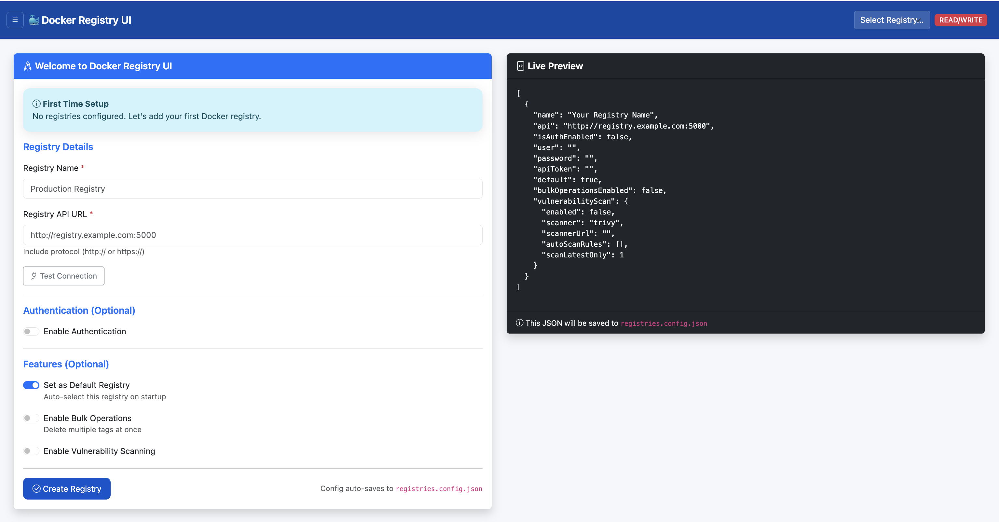

Configuration Guide
Configuration Methods
You can configure registries in two ways:
- Setup Wizard: On first run, the UI shows a setup wizard to configure your registry through the web interface
- Config File: Pre-create a
registries.config.jsonfile for automated deployments
Environment Variables
| Variable | Description | Default |
|---|---|---|
CONFIG_FILE |
Path to registries configuration file (optional - setup wizard used if not provided). By default the app checks /app/registries.config.json. When running inside the official container it is common to set this to /app/data/registries.config.json (for example by mounting ./data:/app/data). |
/app/registries.config.json |
READ_ONLY |
Enable read-only mode (disable delete operations) | false |
PORT |
Port for the web interface | 5000 |
Setup Wizard (First Run)
If no configuration file exists, the UI displays a setup wizard on first access:
- Access the UI at
http://localhost:5000 - Enter registry details:
- Registry Name: Friendly name (e.g., "Local Registry")
- Registry URL: API endpoint (e.g.,
http://localhost:5001) - Authentication: Enable if registry requires credentials
- Click "Test Connection" to verify
- Save configuration
- Configuration is saved to the directory containing the configured
CONFIG_FILE(for example ifCONFIG_FILE=/app/data/registries.config.json, files are saved under/app/data).
Manual Configuration File
For automated deployments, create a registries.config.json file before starting the UI:
Create the config file (example)
Create a directory to hold the config (for example ./data) and add a file named registries.config.json. The application will read whatever path you point CONFIG_FILE at (see environment variables above). Example minimal file:
mkdir -p data
cat > ./data/registries.config.json <<'JSON'
{
"registries": [
{
"name": "Local Registry",
"api": "http://localhost:5001",
"auth": { "type": "none" }
}
]
}
JSONWhen launching the container, mount the data directory and set CONFIG_FILE=/app/data/registries.config.json so the app finds the file and persists scan results in the same directory.
Local Registry (No Authentication)
{
"registries": [
{
"name": "Local Registry",
"api": "http://localhost:5001",
"auth": {
"type": "none"
}
}
]
}Registry with Basic Authentication
{
"registries": [
{
"name": "Private Registry",
"api": "https://registry.example.com",
"auth": {
"type": "basic",
"username": "admin",
"password": "secret"
}
}
]
}Multiple Registries
{
"registries": [
{
"name": "Local Registry",
"api": "http://localhost:5001",
"auth": {
"type": "none"
}
},
{
"name": "Production Registry",
"api": "https://registry.prod.example.com",
"auth": {
"type": "basic",
"username": "admin",
"password": "prod-secret"
}
}
]
}Docker Compose Configuration
Complete example with registry and UI:
version: '3.8'
services:
registry:
image: registry:2
ports:
- "5001:5000"
environment:
REGISTRY_STORAGE_DELETE_ENABLED: "true"
volumes:
- registry-data:/var/lib/registry
registry-ui:
image: ghcr.io/vibhuvioio/docker-registry-ui:latest
ports:
- "5000:5000"
environment:
- CONFIG_FILE=/app/data/registries.config.json
- READ_ONLY=false
volumes:
- ./data:/app/data
depends_on:
- registry
volumes:
registry-data:Security Considerations
- Store credentials securely (use Docker secrets or environment variables)
- Use HTTPS for production registries
- Enable read-only mode in production environments
- Restrict network access to the UI
- Regularly update the UI and Trivy scanner